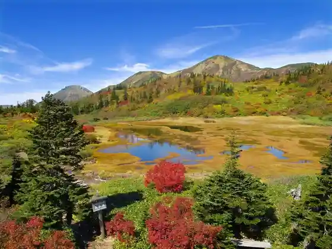
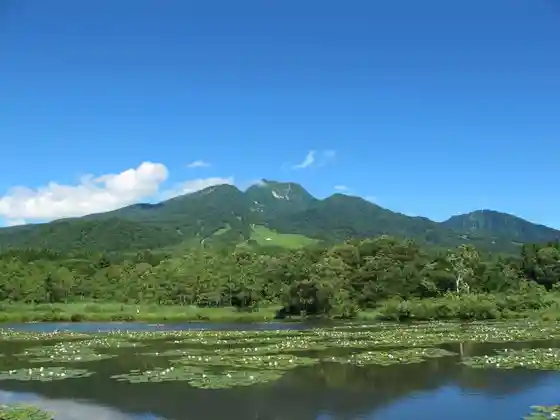
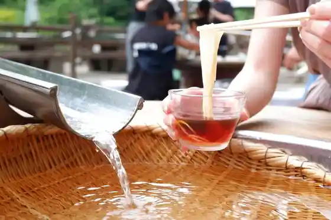
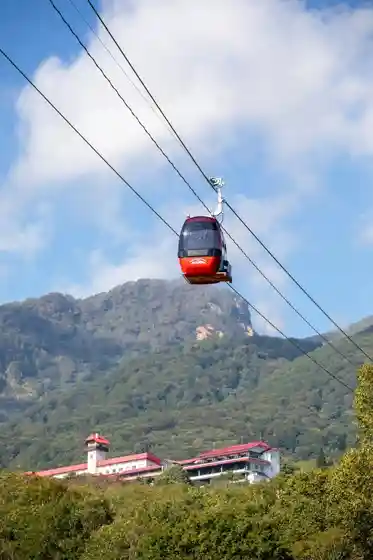

Nae Meiro
Myoko, Niigata · 0255-86-3911 · Official / source link
Koya Ike (Koyaike)
Myoko, Niigata · 0255-86-3911 · Official / source link

Imori Ike
Myoko, Niigata · 0255-75-5270 · Official / source link

O Shokuji Tokoro Nae Meiro En
Myoko, Niigata · 0255-86-6536 · Official / source link

Myoko Highlands Sukai Ga Buru
Myoko, Niigata · 0255-87-2503 · Official / source link

Akakura Onsen Notemburo Taki Baths
Myoko, Niigata · 0255-87-2165 · Official / source link
Zencho Yaku 1,501m Wo Tobu Kuchu no Tabi He Shuppatsu ! Jippu Tour
Myoko, Niigata · 0255-75-1177 · Official / source link
Hiuchiyama
Myoko, Niigata · 0255-86-3911 · Official / source link
Roadside Station (Arai) (Kokudo 18 Go)
Myoko, Niigata · 0255-70-1021 · Official / source link
Sasagamine Highlands
Myoko, Niigata · 0255-86-3911 · Official / source link
Myoko Highlands Eki to Sasagamine Kogen Wo Musubu " Sasagamine Chokko Basu
Myoko, Niigata · 0255-72-3139 · Official / source link
Myoko Yama
Myoko, Niigata · 0255-86-3911 · Official / source link
Akakura Onsen Ski Area
Myoko, Niigata · 0255-87-2125 · Official / source link
Myoko Sanroku Chokubai Center (Tomato)
Myoko, Niigata · 0255-82-2760 · Official / source link
Akakura Ike no Taira Sugino Sawa no Kaku Onsenchi Wo Musubu Basu
Myoko, Niigata · 0255-72-3139 · Official / source link
Myoko Highlands Bijita Center
Myoko, Niigata · 0255-86-4599 · Official / source link
Garden Puru & Naitopuru
Myoko, Niigata · 0255-75-1177 · Official / source link
So Taki
Myoko, Niigata · 0255-86-3911 · Official / source link
Myoko Highlands Biiru Tatora Kan
Myoko, Niigata · 0255-86-2600 · Official / source link
Kanzuri
Myoko, Niigata · 0255-72-3813 · Official / source link
Sekiyama Shrine
Myoko, Niigata · 0255-82-2464 · Official / source link
Gantan Shonichi no Shutsu Socho Sukai Ga Buru / Akakura Kanko Resort Ski Area
Myoko, Niigata · 0255-87-2503 · Official / source link
Kan Onsen Fudo Taki
Myoko, Niigata · 0255-86-3911 · Official / source link
Kan Onsen Ski Area
Myoko, Niigata · 0255-82-2316 · Official / source link
Araimaunten Resort (Kyu Rottearai Resort)
Myoko, Niigata · 0255-75-1100 · Official / source link
Myoko Sugi no Hara Ski Area
Myoko, Niigata · 0255-86-6211 · Official / source link
Hato Land Myoko (GW Wakuwaku Taiken Fea)
Myoko, Niigata · 0255-82-3935 · Official / source link
Ike no Heion Izumi Arupemburikku Ski Area
Myoko, Niigata · 0255-86-2370 · Official / source link
Kami no Miya Onsen Kawara Tei
Myoko, Niigata · 0255-72-7307 · Official / source link
Kenshin Koganokoshita Shokubunka Kubiki no Dento Shoku Sasa Mi Hisashi Shi
Myoko, Niigata · 0255-86-3911 · Official / source link
Kitaguni Kaido Sekigawa Sekisho (Michi no Rekishikan)
Myoko, Niigata · 0255-86-3280 · Official / source link
Akakura Kanko Resort Ski Area
Myoko, Niigata · 0255-87-2503 · Official / source link
Myoko Natsuyasumi Oyako Wa Ga Shon
Myoko, Niigata · 0255-82-3935 · Official / source link
HOT STASH sauna point.
Myoko, Niigata · 050-5539-0253 · Official / source link
Madarao Kogen Ski Area
Myoko, Niigata · 0269-64-3214 · Official / source link
Kyuka Village Myoko Runrun Ski Area
Myoko, Niigata · 0255-82-3168 · Official / source link
Myoko Sukii Park
Myoko, Niigata · 0255-82-4189 · Official / source link
Ki no Ue no Daiboken Tsuriiadobencha
Myoko, Niigata · 0255-75-1100 · Official / source link
Myoko Sugi no Hara Ski Area 2025-2026 Su no Mobiru Experience
Myoko, Niigata · 080-3291-7227 · Official / source link
MYOKO IKENOTAIRA MTB PARK
Myoko, Niigata · 0255-86-2370 · Official / source link
Shimizugaike
Myoko, Niigata · 0255-86-3911 · Official / source link
Myoko Highlands Su no Shu Tour
Myoko, Niigata · 0255-77-4860 · Official / source link
Hato Land Myoko
Myoko, Niigata · 0255-82-3935 · Official / source link
Myoko Kata Kenko Hoyochi Puroguramu
Myoko, Niigata · 0255-86-4466 · Official / source link
Myoko De Nippon no Dentokogei Experience
Myoko, Niigata · 0255-77-4860 · Official / source link
Kikyu Experience / Rottearai Resort
Myoko, Niigata · 0255-75-1100 · Official / source link
MYOKO BASE CAMP
Myoko, Niigata · 0255-70-2195 · Official / source link
Snow Caliber Mini Trip Setsujosha Yuran Tour / Myoko Sugi no Hara Ski Area
Myoko, Niigata · 0255-86-6211 · Official / source link
Infiniteipuru Barerusauna
Myoko, Niigata · 0255-82-4111 · Official / source link
Higawa Ri Adobencha
Myoko, Niigata · 0255-75-1177 · Official / source link
Myoko no Shuzokengaku Kun no I Shuzo
Myoko, Niigata · 0255-72-3136 · Official / source link
Su no Doraibu Tour / Araimaunten Resort
Myoko, Niigata · 0255-75-1100 · Official / source link
Su no Adobencha (HIZUME)
Myoko, Niigata · 0255-75-1177 · Official / source link
Su no Chubingu Park / Araimaunten Resort
Myoko, Niigata · 0255-75-1100 · Official / source link
Suponji Bobukizzu Park / Araimaunten Resort
Myoko, Niigata · 0255-75-1100 · Official / source link
Su no Rafuteingu / Araimaunten Resort
Myoko, Niigata · 0255-75-1100 · Official / source link
Yukiguni Hataraku Kuruma Experience
Myoko, Niigata · 0255-75-1177 · Official / source link
Su no Rafuteingu
Myoko, Niigata · 0255-75-1177 · Official / source link
Sutoraida Park / Araimaunten Resort
Myoko, Niigata · 0255-75-1100 · Official / source link
Jippu Tour / Araimaunten Resort
Myoko, Niigata · 0255-75-1100 · Official / source link
Neichatorekkingu
Myoko, Niigata · 0255-87-3143 · Official / source link
Ofurodo & Zekkei Wo Tanoshi Mu ! Puraibeto E-bike Adobencha
Myoko, Niigata · 0255-77-4860 · Official / source link
Shoshinshakangei ! Teremakusukii De Mito no Shinsetsu Wo Suberu 1 Nichi Puran
Myoko, Niigata · 090-2721-7119 · Official / source link